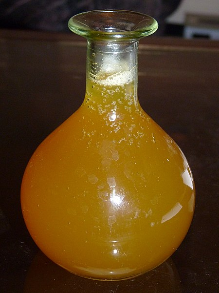

Honey Mead

Description
This honey mead will keap you warm. Also the perfect drink to keep you lose for battle.
Ingredients
- water
- 4 pounds of honey
- a cup of berries, to taste
- 1 orange, pealed
- 10 prunes
- yeast
Steps
Heat a gallon of water in a pot, do not let it boil.
Add the honey until it dissolves.
Add the berries, orange, and prunes.
Tranfer the mixture to your best jug.
Add cold water to the jug until there is 2 inches of space left at the top.
When the mixture cools enough, add the yeast.
Cover the top with your hand, and shake the jug over your head.
Cover the jug with a sheeps bladder, and cinch it around the kneck of the jug.
Leave the jug in a dark place for 6 wees.
Enjoy!